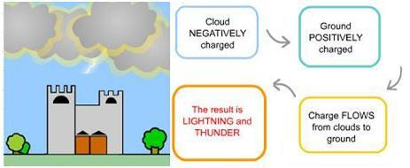

It is not surprising, given the advances in technology, that there has been a significant increase in Web-based learning programs. Opinions on the degree of acceptance and effectiveness of e-learning vary, but well-designed and appropriately used programs have great potential.
Creating online instruction can present significant challenges. The question may always be, “Is it as effective as classroom learning programs?” But what online learning programs can do rather easily, which may be difficult to achieve in the classroom, is adjust or adapt to fit the needs of different types of learners.
Comparing Online Learning to Classroom Learning
Comparing online learning to a classroom model may not be adequate because existing classroom techniques may not improve learning either. Further, numerous questions concerning adaptive online education systems need to be addressed, including:
- Which technological approaches should be considered?
- Which characteristics of the learners should be considered?
- Which theories or models should form the system's design?
- How should input about learners be captured?
- How should the system operate?
- How should we assess the performance and benefits of the system?
Adaptive and Intelligent System Technologies
Brusilovsky and Peylo (2003) provide a good overview of the various technical approaches used in adaptive and intelligent web-based educational systems. These classic technologies include: curriculum sequencing, intelligent solution analysis, problem solving support, adaptive presentation, and adaptive navigation support. New technologies include adaptive information filtering, intelligent monitoring, and intelligent collaborative learning.
- Curriculum Sequencing: The goal of curriculum sequencing is to provide the student with the most suitable, individually planned sequence of topics to learn and customized learning tasks. The system tries to help the student find an optimal path through the learning materials.
- Intelligent Solution Analysis: Intelligent systems interact with the student by analyzing the student's solutions to educational problems. The system can tell what is wrong or incomplete and which missing or incorrect pieces of knowledge may be causing the error. These systems provide extensive error feedback.
- Interactive Problem Solving Support: These systems provide the student with intelligent help on each problem-solving step (e.g., anything from giving a hint to executing the next step for the student). This technology is not as popular on the web as stand-alone due to the complexity of the implementation. Server-side implementations cannot actively watch the student's actions and can only provide help by request.
- Adaptive Systems: Adaptive system presentation systems obtain information about the student that is used to dynamically generate pages. These systems may vary page content, or they might present content in a different order or format. Adaptive navigation support systems change the appearance of the system's hyperlinks to help students to navigate through the learning materials. These systems might adaptively sort, annotate, or partly hide the links of the current page to make it easier to choose where to go next. Adaptive information filtering systems is a technology from the field of information retrieval. The system's goal is to find a few items that are relevant to the user's interests from a large pool of documents. The system filters, orders and recommends the most relevant documents from the pool.
Learner Characteristics' Accommodation Models
Meeting the needs of students with varying backgrounds and abilities is a challenge. One group of researchers has developed web-based learning systems that gauge student knowledge levels and dynamically match them with appropriate learning materials (Chen, Lee, & Chen, 2005; Sessink, Befftink, Tramper, & Hartog, 2007).
Other researchers (Kelly, 2008; Magoulas, Papnikolaou, & Grigoriadou, 2003; Papanikolaou, Grigoriadou, Kornilakis, & Magoulas, 2003; Papnikolaou, Mabbott, Bull, & Grigoriadou, 2006; Schiaffino, Garcia, & Amandi, 2008; Sun, Joy, & Griffiths, 2007) have designed systems that identify students' individual characteristics (e.g., cognitive or learning styles) and preferences.
- Adaptation to Learner Knowledge and Progress: The majority of learners probably have experienced at least one class where the difficulty of the material or the pace of the class was not a good match for them. Material that is too easy or difficult to master or delivery of the materials that is too slow or fast frustrates the user and results in suboptimal learning. Chen, et al (2005) and Sessink, et al (2008) address the challenges posted by heterogeneous student populations. They advocate the use of personalization and also learning systems that dynamically assess and adapt to the student's current knowledge and ability levels.
- PEL-IRT Subjective Measurement System: Chen, et al (2005) developed a personalized e-learning system that accounts for both the learner's ability and the course material difficulty. The system, PEL-IRT, is based on the Item Response Theory (IRT). IRT has been applied with computer-based standardized tests such as the GMAT, GRE, and TOEFL. Students provide feedback as they proceed through the PEL-IRT system, rate the difficulty of the material, and indicate whether they understand the material. The system dynamically adjusts and provides learning materials of an appropriate difficulty level.
- Proteus Objective Measurement System: Proteus (Sessink, et al, 2007) adapts to learners' current knowledge and progress. The system presents materials and then poses questions to activate student's learning. The student's ability and attempts to answer questions provides input and informs the system on the student's level of knowledge. The PEL-IRT system differs from Proteus in that PEL-IRT relies on subjective student feedback as a primary input. The Proteus system focuses on object student performance and both methods have advantages and disadvantages. Self-reported understanding, on which PEL-IRT relies, may not present an accurate picture of learning. Proteus may not be an appropriate vehicle for learning material that is not structured or linear.
Adaptation to Learner Styles and Preferences
People learn differently, thus the idea of accommodating individual differences to improve learning outcomes is compelling. While it may seem intuitive to utilize the student's individual characteristics and preferences, it is less clear which model or framework is most appropriate.
Activist, Reflector, Theorist, and Pragmatist
Magoulas, et al (2003) and Papnikolaou, et al, (2003) propose a learning style based on a model used by Honey and Mumford (1992). The model's styles are Activist, Reflector, Theorist, and Pragmatist. The styles are based on individual preferences for Concrete (feeling) vs. Abstract (thinking) perception and Active (doing) vs. Reflective (watching) processing.
- Activists are open-minded, skeptical and tend to act first and consider the consequences afterwards. They involve themselves fully and without bias in new learning experiences.
- Reflectors collect data and prefer to think about it thoroughly before coming to any conclusions. They like to stand back and ponder experiences and observe them from many different perspectives.
- Theorists think problems through in a vertical, step by step, logical way. They adapt and integrate observations into complex but logically sound theories.
- Pragmatists positively search out new ideas and take the first opportunity to experiment with applications. But they tend to be impatient with ruminating and open-ended discussions.
For example, if the student's style is Theorist, the system would present educational material that presents theory and concepts starting with an introductory question, then a link to the theory, followed by a link to an example. If the student's style is Pragmatist, the system would start with an example, then a link to the theory, followed by a link to a self-assessment question.
Sensing vs. Intuitive, Visual vs. Verbal and More
Sun et al (2007) and Schiaffino, et al (2008) propose an adaptive system based on the Felder and Silverman model (1988). The model style is determined by four dimensions: Sensing vs. Intuitive, Visual vs. Verbal, Active vs. Reflective, and Sequential vs. Global.
The four dimensional learning model categorizes small chunks of learning material, called ”learning objects”, along the four learning style dimensions. For example, if a student has an Active processing style and is reading material on a particular topic, the system might recommend that the student participate in the course's online discussion of the topic. The system would recommend that a student with a Reflective processing style spend some additional time thinking about the topic.
Eight Types of Intelligence
Kelly (2008) bases his personalized adaptive learning system, EDUCE, on Howard Gardner's 1983 theory of Multiple Intelligences (MI). Gardner proposed that humans might have up to eight unique types of intelligence: Logical/Mathematical, Linguistic/Verbal, Visual/Spatial, Bodily/Kinesthetic, Musical/Rhythmic, Interpersonal, Intrapersonal, and Naturalistic (Gardner, 2006). Of the eight, four were selected for the learning system's model: Logical/Mathematical, Linguistic/Verbal, Visual/Spatial, Bodily/Kinesthetic, and Musical/Rhythmic (Kelly, 2008).
Each curriculum in the EDUCE system has four versions and each version is developed based on one for the four intelligences. Those four versions are:
- Logical/Mathematical Intelligence – consist of the ability to detect patterns, reason deductively and think logically
- Verbal/Linguistic Intelligence – involves having a master of the language and includes the ability to manipulate language to express oneself
- Visual/Spatial Intelligence – the ability to manipulate and create mental images in order to solve problems
- Musical/Rhythmic Intelligence – encompasses the capability to recognize and compost musical pitches, tones and rhythms.
- For example, this learning module is explaining static electricity:
- Verbal/Linguistic Learning
An atom is neutral when the number of protons in an atom equals the number of electrons. It has no overall charge.
Logical/Mathematical Intelligence
| System | Measurement | Measurement Description |
|---|---|---|
| Universe | Contains 1000's of Galaxies | One galaxy is the Andromeda Galaxy |
| Galaxy | Contains billions of stars | We live in the Milky Way Galaxy. Our sun is one star. |
| Earth | Diameter is 12,700,00 meters | The length of a football field is 130 m |
| Atom | Diameter is 0.00000000008 m | The size of a hair is 0.000007 m |

Systems in Reality
Adaptive learning systems use a variety of approaches to assess student's styles and learning preferences. Overall, results seem encouraging, but it is clear that there is a lot of research left to be done to test the success of these systems.
Some of the researchers did not formally assess the system's effectiveness and their only purpose was to present their approach and system design (Sun, et al, 2007). Students' opinions of the adaptive learning systems were generally positive. Overall students found the adaptive functionality of the INSPIRE system to be helpful (Papnilolaou, et al, 2003).
However, outcomes regarding students' use of materials correlated to their preferences were inconclusive. Researchers initially hypothesized that students with certain learning styles or preferences would gravitate to particular types of resources and learning materials.
However, evidence of this was mixed. Kelly (2008) initially provided learning resources that:
- matched student's preferences
- purposely mismatched others
- gave some learners complete control
- gave some learners partial control
In general, no significant differences were found for the student's learning activity and learning gain.
Conclusion
Adaptive online learning systems have significant potential to benefit students and improve learning outcomes. Given the differences in learning styles and abilities, web-based learning programs should avoid imposing a “one size fits all” philosophy or model. While there is clearly a need for further research and testing, developments in the design of web-based learning systems using adaptive and intelligent agent technology generally seem quite promising.
References
Brusilovsky, P., & Peylo, C. (2003). Adaptive and intelligent web-based educational systems. International Journal of Artificial Intelligence in Education, 13, 159–172.
Chen, C.-M., Lee, H.-M., & Chen, Y.-H. (2005). Personalized e-learning system using Item Response Theory. Computers & Education, 44, 237–255.
Felder, R., & Silverman, L. (1988). Learning and teaching styles. Journal of Engineering Education, 78(7), 674–681.
Felder, R. M., & Spurlin, J. E. (2005). Applications, reliability, and validity of the index of learning styles. International Journal of Engineering Education, 21(1), 103-112.
Gardner, H. (1983). Frames of mind: The theory of multiple intelligences. New York: Basic Books.
Gardner, H. (2006). Multiple intelligences: New horizons. New York: Basic Books.
Honey, P., & and Mumford, A. (1992). The manual of learning styles (3rd ed.). Maidenhead.
Kelly, D. (2008). Adaptive versus learner control in a multiple intelligence learning environment. Journal of Educational Multimedia and Hypermedia, 17(3), 307-336.
Magoulas, G.D., Papanikolaou, K., & Grigoriadou, M. (2003). Adaptive web-based learning: accommodating individual differences through system's adaptation. British Journal of Educational Technology, 34 (4), 511–527.
Papanikolaou, K.A., Grigoriadou, M., Kornilakis, H., & Magoulas, G.D. (2003). Personalizing the interaction in a web-based educational hypermedia system: the case of INSPIRE. User Modeling and User-Adapted Interaction, 13, 213-267.
Papanikolaou, K.A., Mabbott, A., Bull, S., & Grigoriadou, M. (2006). Designing learner-controlled educational interactions based on learning/cognitive style and learner behaviour. Interacting with Computers, 18, 356–384.
Schiaffino, S., Garcia, P., & Amandi, A. (2008). eTeacher: providing personalized assistance to e-learning students. Computers & Education, 51, 1744–1754.
Sessink, O.D.T., Beeftink, H.H., Tramper, J., & Hartog, R.J.M. (2007). Proteus: a lecturer-friendly adaptive tutoring system. Journal of Interactive Learning Research, 18 (4), 533-554.
Sun, S., Joy, M., & Griffiths, N. (2007). The use of learning objects and learning styles in a multi-agent education system. Journal of Interactive Learning Research, 18 (3), 381-398.